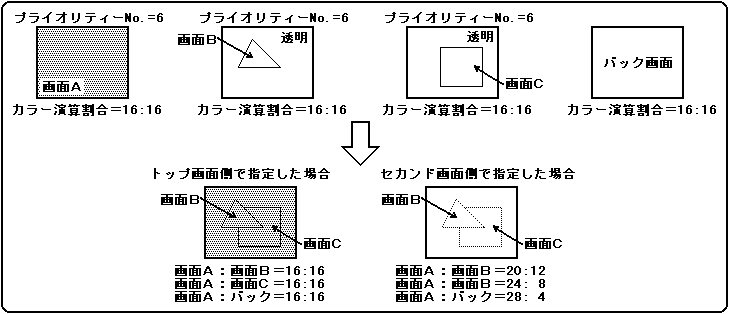

★
HARDWARE Manual★
VDP2ユーザーズマニュアル★
第12章 カラー演算
★
HARDWARE Manual★
VDP2ユーザーズマニュアル★
第12章 カラー演算
▲
戻る｜
進む▼
VDP2ユーザーズマニュアル/第12章 カラー演算
●通常のカラー演算
- トップ画像とセカンド画像とでカラー演算を行うときのモードには、つぎの2種類があります。
トップ画像とセカンド画像は、カラー演算割合の値に従って加算する
トップ画像とセカンド画像は、そのままの値で加算する
- カラー演算割合の値に従って加算するカラー演算モードを使用した場合、各画面のカラー演算割合の値はレジスタに設定します。スプライトのカラー演算割合は、最大8つのレジスタ値から1つをキャラクタごとに指定することができ、スクロール画面のカラー演算割合は、各面に1つずつ持っているレジスタに指定します。
スプライトのカラー演算割合については、「9.2 プライオリティとカラー演算」の「●カラー演算割合レジスタ」を参照してください。
- 各画面のカラー演算割合は、5ビットで指定し、トップ画像：セカンド画像＝31：1〜0：32の計32段階を指定することができ、その割合の値を指定するモードには、次の2種類あります。
- トップ画像側で指定する
- セカンド画像側で指定する
- トップ画像側で指定する場合は、セカンド画像の画面に関係なく、トップ画像になったスプライト、またはスクロール画面のカラー演算割合の値が使用されます。また、セカンド画像側で指定する場合は、セカンド画像の画面によってカラー演算割合を変えることができ、スプライトとスクロール画面だけでなくラインカラー画面やバック画面のカラー演算割合の値も使用されます。
- そのままの値で加算するカラー演算モードを使用する場合、トップ画像のカラーデータを00Hから徐々に本来のカラーに書き換えることでセカンド画像の上にトップ画像がフェードインするような効果を出すことができます。しかし、それと同時に加算結果のカラーは本来よりも明るくなってしまうので注意してください。加算結果がFFHを超えた場合はFFHとします。カラー演算割合モードを図12.2に示します。
図12.2 カラー演算割合モード

- カラー演算は、TV画面モードがノーマルモードのときには制限なく行うことができますが、TV画面モードがハイレゾモードまたは専用モニターモードのときにはカラーRAMモードとセカンド画像のカラー形式による制限があります。カラー演算機能の制限を表12.1に示します。
- 表12.1 ハイレゾモードまたは専用モニターモード時のカラー演算機能
カラーRAMモード | セカンド画像のカラー形式 | カラー演算機能 |
|---|
| モード0 | パレット形式またはRGB形式 | ○ 使用できます |
|---|
| モード1 | パレット形式 | × 使用できません |
|---|
| RGB形式 | ○ 使用できます |
| モード2 | パレット形式 | × 使用できません |
|---|
| RGB形式 | ○ 使用できます |
▲
戻る｜
進む▼
★
HARDWARE Manual★
VDP2ユーザーズマニュアル★
第12章 カラー演算
Copyright SEGA ENTERPRISES, LTD., 1997